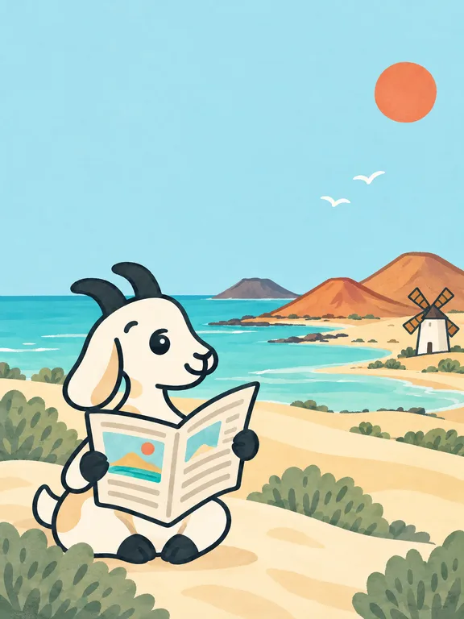
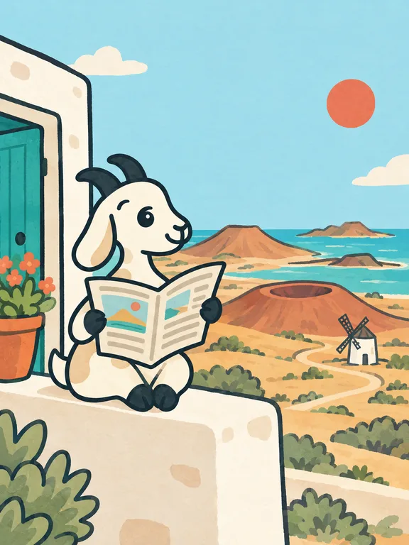
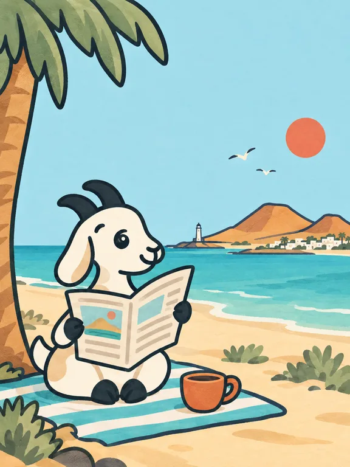

Baifo art 5/5: the home first screen
Three versions of the picture, made with the baifo-art skill (card 265). Each one is shown as a phone first screen (375×667, the text in the free sky) and a desktop first screen (text left, picture right). Pick one, then the page gets built with it and the palette from card 267.
1. On the dunes
The goat reads on a Corralejo dune. Behind it: turquoise shallows, Lobos, two ochre cones, a windmill. The most sky, so the most room for text.

Anúnciate desde 5 € por WhatsApp
Los anuncios de la isla, como en el periódico
Cosas, servicios y planes de vecinos de Fuerteventura. Hablas directo por WhatsApp.
Anúnciate desde 5 € por WhatsApp2. On the village terrace
The goat reads on the wall of a whitewashed house (teal door, flowers) and looks out over the island: cones, Calderón Hondo, a windmill, a path to the sea and Lobos. Most "island", least sky.

Los anuncios de la isla, como en el periódico
Los anuncios de la isla, como en el periódico
Cosas, servicios y planes de vecinos de Fuerteventura. Hablas directo por WhatsApp.
Anúnciate desde 5 € por WhatsApp3. On the beach
The goat reads on a striped towel under a palm with a coffee. Across the water: a lighthouse, a white village, ochre cones. The most relaxed, "Sunday paper" mood.

Los anuncios de la isla, como en el periódico
Los anuncios de la isla, como en el periódico
Cosas, servicios y planes de vecinos de Fuerteventura. Hablas directo por WhatsApp.
Anúnciate desde 5 € por WhatsAppWording (copywriting skill)
Recommended set. The headline sets up the newspaper idea, so "Read the paper" is clear without explaining it,
and it is something no other classifieds site can say. "Advertise" keeps today's text (HOME_HERO_ORDER, here with "por WhatsApp" added) as a small link.
| Headline | Button: all listings (/explore) | Button: category ring | |
|---|---|---|---|
| es | Los anuncios de la isla, como en el periódico | Leer el periódico | Ver categorías |
| en | The island's classifieds, just like the local paper | Read the paper | Browse categories |
| de | Die Kleinanzeigen der Insel, wie in der Zeitung | Zeitung lesen | Kategorien ansehen |
| fr | Les petites annonces de l'île, comme dans le journal | Lire le journal | Voir les catégories |
| it | Gli annunci dell'isola, come sul giornale | Leggi il giornale | Vedi le categorie |
Other headlines (es): «Pasa y lee, vecino», the goat invites you in, the most playful, but says nothing about what Baifo is. «Bienvenido a la isla», the warmest, but any island site could say it. If "Leer el periódico" turns out unclear in testing, the safe fallback is «Ver todos los anuncios».